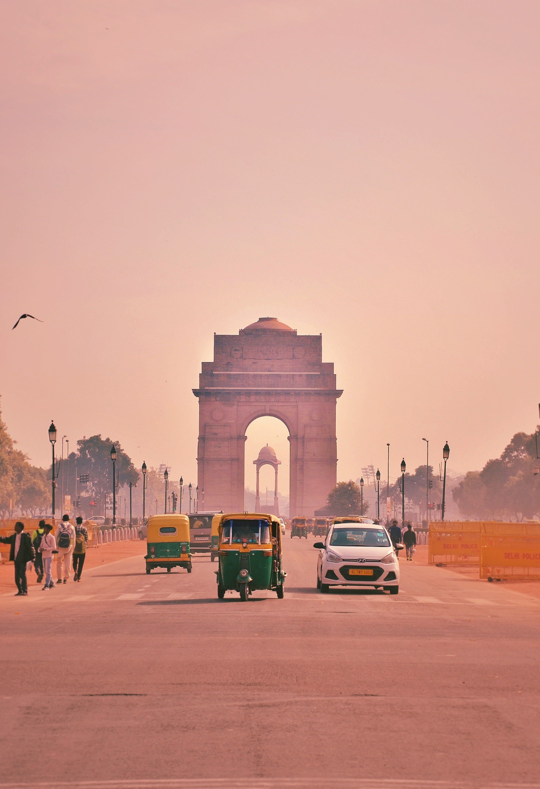
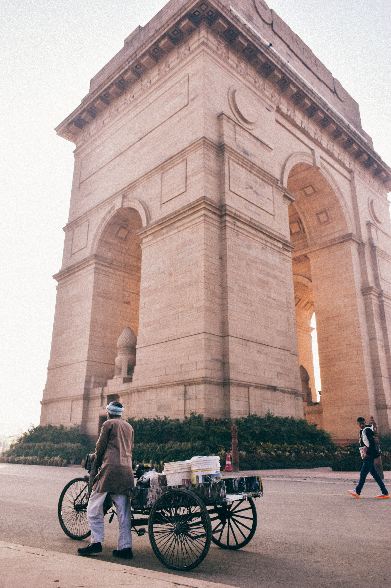
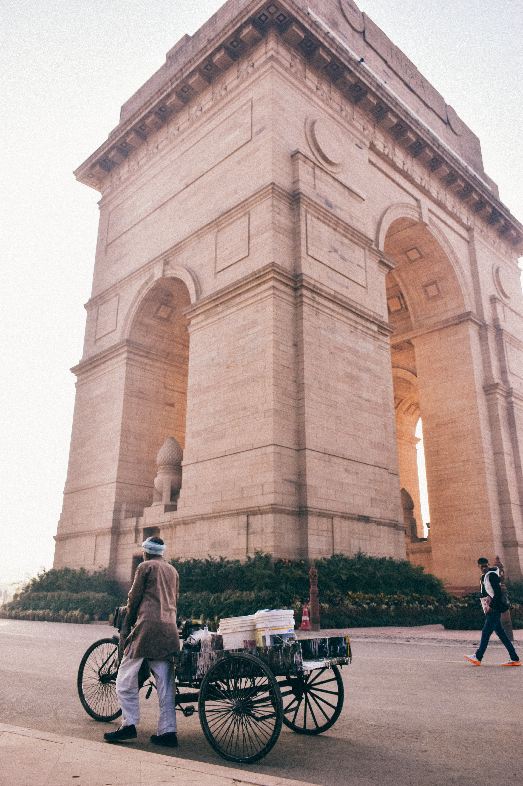

india gate

 

The India Gate was part of the work of the Imperial War Graves Commission (IWGC), which came into existence in December 1917 under the British rule for building war graves and memorials to soldiers who were killed in the First World War[3] The foundation stone of the gate then called the All India War Memorial, was laid on 10 February 1921, at 16:30, by the visiting Duke of Connaught in a ceremony attended by Officers and Men of the British Indian Army, Imperial Service Troops, the Commander in Chief, and Chelmsford, the viceroy.[4] On the occasion, the viceroy is reported to have said, "The stirring tales of individual heroism, will live forever in the annals of this country", and that the memorial which was a tribute to the memory of heroes, "known and unknown", would inspire future generations to endure hardships with similar fortitude and "no less valour".[4] The Duke also read out a message by the King, which said, "On this spot, in the central vista of the Capital of India, there will stand a Memorial Archway, designed to keep", in the thoughts of future generations, "the glorious sacrifice of the officers and men of the British Indian Army who fought and fell". During the ceremony, the Deccan Horse, 3rd Sappers and Miners, 6th Jat Light Infantry, 34th Sikh Pioneers, 39th Garhwal Rifles, 59th Scinde Rifles (Frontier Force), 117th Mahrattas, and 5th Gurkha Rifles (Frontier Force), were honoured with the title of "Royal" in recognition of the distinguished services and gallantry of the British Indian Army during the Great War".[4] Ten years after the foundation stone laying ceremony, on 12 February 1931, the memorial was inaugurated by Lord Irwin, who on the occasion said "those who after us shall look upon this monument may learn in pondering its purpose something of that sacrifice and service which the names upon its walls record."[5] In the decade between the laying of foundation stone of the memorial and its inauguration, the rail-line was shifted to run along the Yamuna river, and the New Delhi Railway Station was opened in 1926.[6][7] The gate, which is illuminated every evening from 19:00 to 21:30, today serves as one of Delhi's most important tourist attractions. Cars travelled through the gate earlier, until it was closed to traffic.[citation needed] The Republic Day Parade starts from Rashtrapati Bhavan and passes around the India Gate.[citation needed] India gate is also a popular spot for civil society protests in New Delhi, with historical protests being against the Nirbhaya rape case, Unnao rape case, and the anti-corruption movement, inter alia.[8][9][10] In 2017, the India Gate was twinned with the Arch of Remembrance in Leicester, England,[further explanation needed] another Lutyens war memorial, following a very similar design but on a smaller scale. In a ceremony, India's high commissioner to the United Kingdom laid a wreath at the arch in Leicester and the British high commissioner to India laid one at the India Gate.